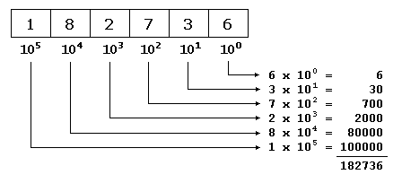
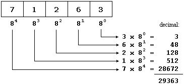
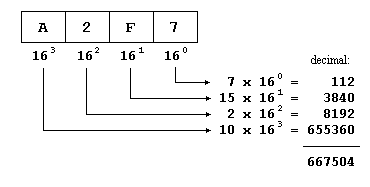

|
Numeral radixes Decimal, Hexadecimal and Octal |

|
|
| |
|
Numeral radixes Decimal, Hexadecimal and Octal |
|
|
| |
If one pays attention all the I signs always represents the value 1 (one) wherever they be placed, like the V sign always represents our 5 (five). Nevertheless that does not take place in our decimal system. When we write the decimal symbol 1 we are not always talking about value 1 (I in Roman numbers). For example:I 1 II 2 III 3 IV 4 V 5
In these cases our symbol 1 does not always has a value of 1 (I in Roman numbers). For example, in the second case, the symbol 1 represents the value 10 (ten, X in Roman) and in the third one, 1 represents the value 100 (one hundred, C).1 I 10 X 100 C
Another example:
275is not equivalent to 2+7+5, rather could be decomposed as 200+70+5:
therefore, the first sign 2 is equivalent to 200 (2 x 100), the second sign, 7 is equivalent to 70 (7 x 10) whereas the last sign corresponds to value 5 (5 x 1).200 + 70 5 --- 275
All the previous can be mathematically represented in a very simple way. For example, to represent the value 182736 we can assume that each digit is the product of itself multiplied by 10 powered to its place as exponent, beginning from the right with 100, following with 101, 102, and so on:

0123456789the octals numbers include only the signs from the 0 to the 7:
01234567and, therefore, its mathematical radix is 8. In C++ octal numbers have the peculiarity that they always they begin by a 0 digit. Let us see how we would write the first numbers in octal:
Thus, for example, number 17 (seventeen, or XVII in Romans) it is expressed 021 as an octal number.octal decimal ----- ------- 0 0 (zero) 01 1 (one) 02 2 (two) 03 3 (three) 04 4 (four) 05 5 (five) 06 6 (six) 07 7 (seven) 010 8 (eight) 011 9 (nine) 012 10 (ten) 013 11 (eleven) 014 12 (twelve) 015 13 (thirteen) 016 14 (fourteen) 017 15 (fifteen) 020 16 (sixteen) 021 17 (seventeen)
We can apply the scheme that we saw previously with the decimal numbers to the octal numbers simply by considering that its radix is 8. For example, taking the octal number 071263:
therefore the octal numbers 071263 it is expressed as 29363 in decimal numbers.
hexadecimal decimal
----------- -------
0 0 (zero)
0x1 1 (one)
0x2 2 (two)
0x3 3 (three)
0x4 4 (four)
0x5 5 (five)
0x6 6 (six)
0x7 7 (seven)
0x8 8 (eight)
0x9 9 (nine)
0xA 10 (ten)
0xB 11 (eleven)
0xC 12 (twelve)
0xD 13 (thirteen)
0xE 14 (fourteen)
0xF 15 (fifteen)
0x10 16 (sixteen)
0x11 17 (seventeen)

110011111010010100In order to pass it to decimal we would need to conduct a mathematical operation similar to the one we have used previously to convert from hexadecimal or octal, which would give us the decimal number 212628.
Nevertheless to pass this sequence to octal it will only take to us some seconds and we can do it just seeing it: Since 8 is 23, we will separate the binary value in groups of 3 numbers:
110 011 111 010 010 100and now we just have to translate to octal numberal radix each group separately:
giving the number 637224 as result. This same process can be inversely performed to pass from octal to binary.110 011 111 010 010 100 6 3 7 2 2 4
In order to conduct the operation with hexadecimal numbers we only have to perform the same process but separating the binary value in groups of 4 numbers (16 = 24):
Therefore, the binary expression 110011111010010100 can be represented in C++ as 212628 (decimal), as 0637224 (octal) or as 0x33e94 (hexadecimal).11 0011 1110 1001 0100 3 3 E 9 4
The hexadecimal code is specially interesting in computer science since nowadays computers are based on bytes composed of 8 binary bits and therefore each byte matches with the rank that 2 hexadecimal numbers can represent. For that reason is the most used type when representing values translated from binary.
| ©The C++ Resources Network, 2000 - All rights reserved | ||
|